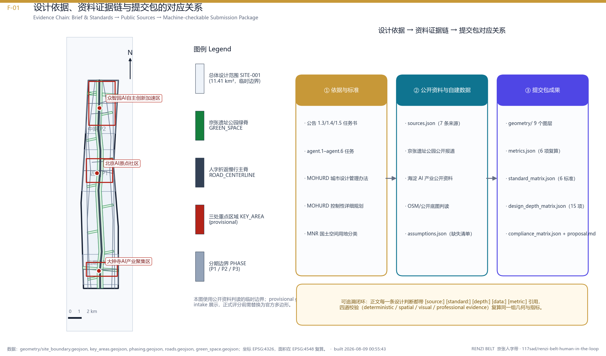
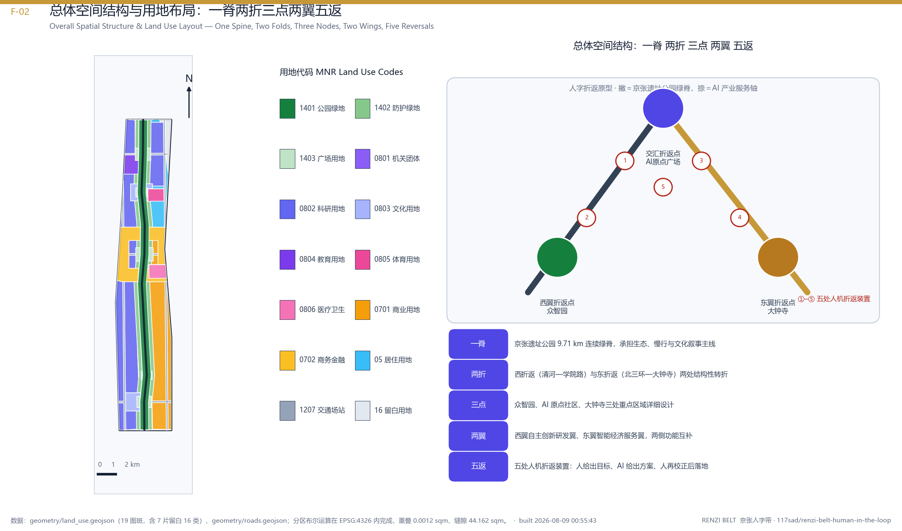
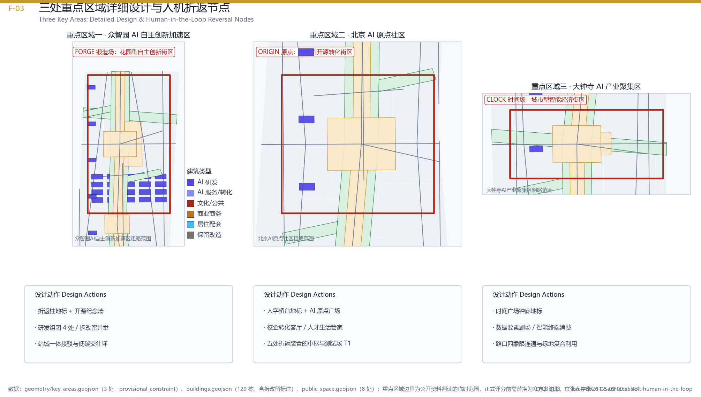
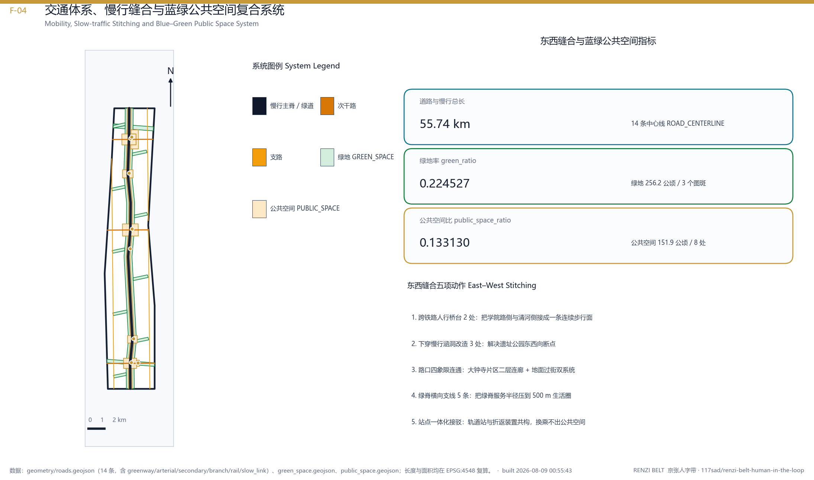
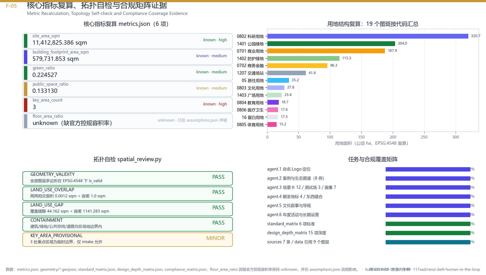

统筹研究范围
面向 43.6 km² 提出 AI 产业生态、三区两翼协同、未来城市形态与文化叙事。
- AI 创新链与人才链
- 全球案例转化机制
- 品牌命名与传播
离线电子展示。所有权威数据来自 GeoJSON、metrics.json、矩阵与自检结果；本页把 5 张方案图、三层范围、三处重点区域、用地结构、交通慢行、蓝绿公共空间、12 个场景卡、核心指标、来源与假设转成人类可读的视觉说明。本页不加载 CDN、远程地图瓦片、外部脚本、外部字体或 API 请求。
用地分区、分期边界、绿地、公共空间、慢行主脊与三处重点区域都在同一张图上呈现，便于评审一眼读出空间主线。
正文与 visual 页面都引用这 5 张图，每一张都由 geometry/ 与 metrics.json 同源派生。





以下数值由 geometry/ 派生，复算方法见 metrics.json。
deterministic validation、spatial review、visual packaging check 与 professional evidence review 必须全部通过。当前状态：provisional geometry: PASS intake only, replace with official polygons before formal professional scoring。
方案按统筹研究范围（43.6 km²）、总体设计范围（11.4 km²）、重点区域范围（3 处）递进。
面向 43.6 km² 提出 AI 产业生态、三区两翼协同、未来城市形态与文化叙事。
面向 11.4 km² 组织城市更新、用地结构、交通市政、京张遗址公园活力带。
面向 3 处重点片区开展详细设计，说明功能业态、建筑更新、公共空间与交通组织。
每个场景都说明服务对象、空间位置、数据来源、隐私边界、人工复核与运营主体。
面向开发者、企业与高校的成果发布与模型评测节点。
在可控公共空间测试交通、服务与运维智能体。
用公开数据与人工复核识别遗址公园慢行断点。
连接居住、学习、消费、运动与社交服务。
展示标准制定、可信评测与安全治理能力。
支撑清华、北大、中科院成果转化会客与路演。
大钟寺片区的数据资产、智能终端与内容消费展示。
解释分布式能源、端侧算力与公共服务设施融合。
合规覆盖矩阵说明：本方案对应任务书 agent.1–agent.6 六项必选任务 + 公告 1.3/1.4/1.5 三段必答任务，全部满足。
本页数据全部来自 sources.json、geometry/、metrics.json、standard_matrix.json、design_depth_matrix.json、compliance_matrix.json；不调用任何外部脚本或网络资源。
所有引用都通过 [source:…] [standard:…] [depth:…] [data:…] [metric:…] 形式出现在正文 proposal.md 中；不收集人脸、行为评分等个人信息；临时边界仅支持 intake 展示。